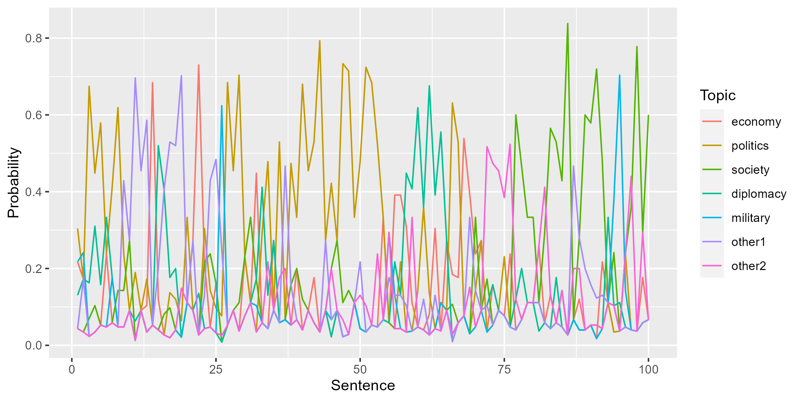

Sequential LDA
Sentence-level topic modeling
Source:vignettes/pkgdown/sequential.Rmd
sequential.RmdSequential LDA can identify topics of sentences more accurately than the standard LDA, because it considers the topics of the previous sentence to classify the current sentence. The topics of earlier sentences not only make the transition of topics smoother but help to mitigate the data sparsity.
Preperation
We use the Sputnik corpus on Ukraine, but preparation is slightly
different from the introduction. Since
Sequential LDA is created for classification of sentences, we apply
corpus_reshape() to the corpus to segment the texts
library(seededlda)
library(quanteda)
library(ggmatplot)
corp <- readRDS("data_corpus_sputnik2022.rds") |>
corpus_reshape(to = "sentences")
toks <- tokens(corp, remove_punct = TRUE, remove_symbols = TRUE,
remove_numbers = TRUE, remove_url = TRUE)
dfmt <- dfm(toks) |>
dfm_remove(stopwords("en")) |>
dfm_remove("*@*") |>
dfm_trim(max_docfreq = 0.1, docfreq_type = "prop")As a result, the DFM has more documents (150925) with sentence number appended to the document names. The sentences make the sparsity of the DFM very high (0.999).
print(dfmt)
#> Document-feature matrix of: 150,925 documents, 58,838 features (99.98% sparse) and 4 docvars.
#> features
#> docs monday president joe biden reiterated united states commitment
#> s1092644731.1 1 1 1 1 1 1 1 1
#> s1092644731.2 0 0 0 1 0 0 0 0
#> s1092644731.3 0 2 0 1 0 0 0 0
#> s1092644731.4 0 1 0 0 0 0 0 0
#> s1092644731.5 0 0 0 0 0 0 0 0
#> s1092644731.6 0 0 0 0 0 0 0 0
#> features
#> docs diplomacy tensions
#> s1092644731.1 1 1
#> s1092644731.2 1 0
#> s1092644731.3 1 0
#> s1092644731.4 1 0
#> s1092644731.5 0 0
#> s1092644731.6 0 0
#> [ reached max_ndoc ... 150,919 more documents, reached max_nfeat ... 58,828 more features ]Sequential LDA
You can enable the sequential algorithm only by setting
gamma = 0.5. If the value is smaller, the topics of the
previous sentence affect less in classifying the current sentence.
lda_seq <- textmodel_lda(dfmt, k = 10, gamma = 0.5,
batch_size = 0.01, auto_iter = TRUE,
verbose = TRUE)
#> Fitting LDA with 10 topics
#> ...initializing
#> ...using up to 16 threads for distributed computing
#> ......allocating 1510 documents to each thread
#> ...Gibbs sampling in up to 2000 iterations
#> ......iteration 100 elapsed time: 10.02 seconds (delta: 0.21%)
#> ......iteration 200 elapsed time: 18.98 seconds (delta: 0.04%)
#> ......iteration 300 elapsed time: 28.02 seconds (delta: -0.07%)
#> ...computing theta and phi
#> ...complete| topic1 | topic2 | topic3 | topic4 | topic5 | topic6 | topic7 | topic8 | topic9 | topic10 |
|---|---|---|---|---|---|---|---|---|---|
| biden | ukrainian | ukrainian | gas | oil | sputnik | minister | military | discuss | nato |
| president | military | war | energy | prices | ukrainian | prime | weapons | joins | security |
| house | operation | people | sanctions | energy | foreign | johnson | nato | sputnik | countries |
| joe | forces | media | european | inflation | eu | uk | defense | joined | moscow |
| trump | donetsk | sputnik | eu | sanctions | european | government | ukrainian | get | president |
| former | special | one | oil | percent | also | british | kiev | also | foreign |
| media | republics | military | europe | price | sanctions | truss | also | talk | also |
| hunter | donbass | photo | countries | global | country | party | china | position | military |
| white | lugansk | also | prices | countries | moscow | biological | taiwan | love | minister |
| new | kiev | western | stream | year | government | also | nuclear | political | states |
Seeded Sequential LDA
You can also enable the sequential algorithm in Seeded LDA only by setting
gamma > 0.
dict <- dictionary(file = "dictionary.yml")
print(dict)
#> Dictionary object with 5 key entries.
#> - [economy]:
#> - market*, money, bank*, stock*, bond*, industry, company, shop*
#> - [politics]:
#> - parliament*, congress*, white house, party leader*, party member*, voter*, lawmaker*, politician*
#> - [society]:
#> - police, prison*, school*, hospital*
#> - [diplomacy]:
#> - ambassador*, diplomat*, embassy, treaty
#> - [military]:
#> - military, soldier*, terrorist*, air force, marine, navy, army
lda_seed <- textmodel_seededlda(dfmt, dict, residual = 2, gamma = 0.5,
batch_size = 0.01, auto_iter = TRUE,
verbose = TRUE)
#> No features removed.
#> Fitting LDA with 7 topics
#> ...initializing
#> ...using up to 16 threads for distributed computing
#> ......allocating 1510 documents to each thread
#> ...Gibbs sampling in up to 2000 iterations
#> ......iteration 100 elapsed time: 9.51 seconds (delta: 0.11%)
#> ......iteration 200 elapsed time: 18.08 seconds (delta: 0.02%)
#> ......iteration 300 elapsed time: 26.64 seconds (delta: 0.02%)
#> ......iteration 400 elapsed time: 35.36 seconds (delta: 0.07%)
#> ......iteration 500 elapsed time: 44.37 seconds (delta: 0.00%)
#> ......iteration 600 elapsed time: 53.96 seconds (delta: 0.02%)
#> ......iteration 700 elapsed time: 63.41 seconds (delta: 0.10%)
#> ......iteration 800 elapsed time: 72.62 seconds (delta: -0.03%)
#> ...computing theta and phi
#> ...complete| economy | politics | society | diplomacy | military | other1 | other2 |
|---|---|---|---|---|---|---|
| energy | biden | ukrainian | nato | military | minister | discuss |
| gas | president | sputnik | security | ukrainian | prime | joins |
| oil | congress | people | moscow | operation | uk | sputnik |
| prices | house | media | countries | forces | european | also |
| sanctions | washington | police | foreign | special | eu | joined |
| market | also | war | president | kiev | government | get |
| countries | joe | one | also | donetsk | johnson | political |
| price | taiwan | also | states | republics | also | president |
| inflation | china | photo | military | moscow | president | hour |
| european | according | kiev | united | donbass | sanctions | journalist |
The plot show the topic probability of the first 100 sentences from an article. Thanks to the sequential algorithm, adjacent sentences are classified into the same topics.
ggmatplot(lda_seed$theta[paste0("s1104078647.", 1:100),],
plot_type = "line", linetype = 1,
xlab = "Sentence", ylab = "Probability", legend_title = "Topic")
References
- Du, L., Buntine, W., Jin, H., & Chen, C. (2012). Sequential latent Dirichlet allocation. Knowledge and Information Systems, 31(3), 475–503. https://doi.org/10.1007/s10115-011-0425-1
- Watanabe, K., & Baturo, A. (2023). Seeded Sequential LDA: A Semi-Supervised Algorithm for Topic-Specific Analysis of Sentences. Social Science Computer Review. https://doi.org/10.1177/08944393231178605